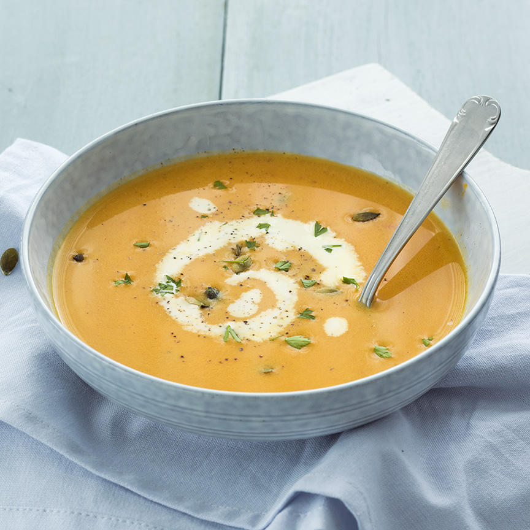

Pompoensoep
Geniet extra van de herfst met deze heerlijke verse basis pompoensoep die eenvoudig en snel te maken is
Ingredienten
- 400 gr pompoen
- 700 ml water
- 2 tomaten
- 1 ui
- 100 ml room
- 1 blokje groentebouillon
- Boter of olie om in te bakken
- Pompoenpitten om te garneren
- peterselie om te garneren
Bereidingswijze
- Snijd de pompoen in stukken en verwijder de schil of gebruik een zakje of doosje kant en klare pompoenblokjes
-
- Zet een pan op het vuur en verhit de boter of olie en voeg de stukken pompoen toe
- Snijd de ui en tomaten grof en doe deze ook in de pan.
- Bak ongeveer 3 minuutjes en giet er dan het water bij.
- Verkruimel het bouillonblokje boven de pan en breng aan de kook. Laat alles nu ongeveer 20 minuten koken op klein vuur.
- Pak de staafmixer en pureer alles tot een gladde soep
- Voeg de room toe en mix alles nog een keer goed door
- Zet nog 2 min op het vuur en serveer dan met wat peterselie, pompoenpitten en eventueel wat extra room.

Tip:vervang de room eens door kokosmelk, daar krijgt je soep een lekker Oosters tintje van.